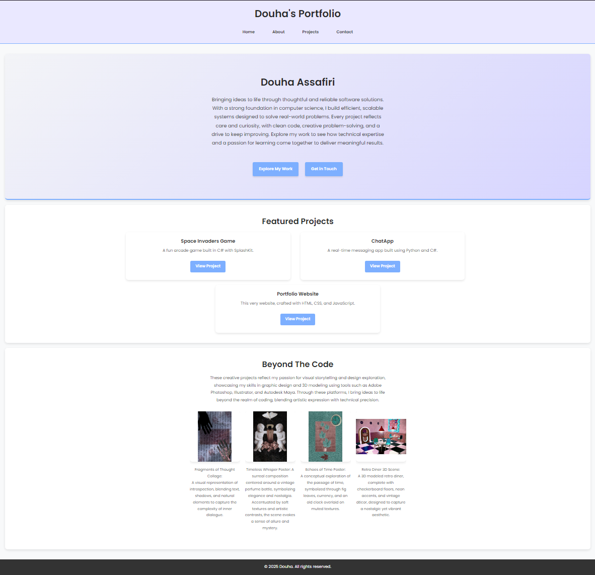
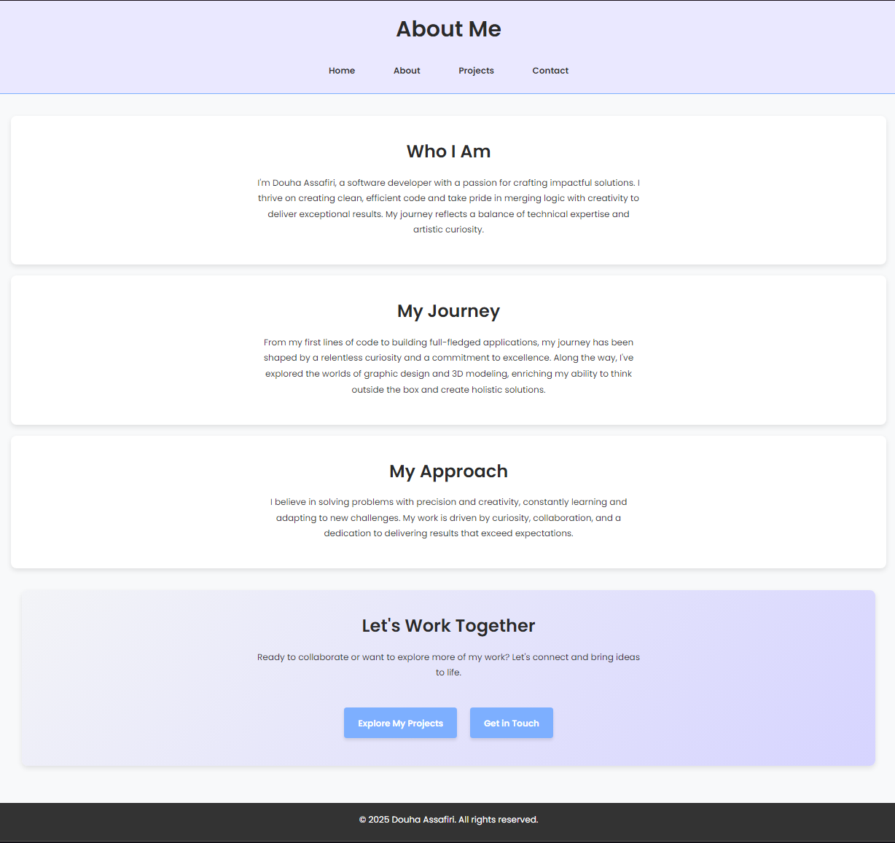
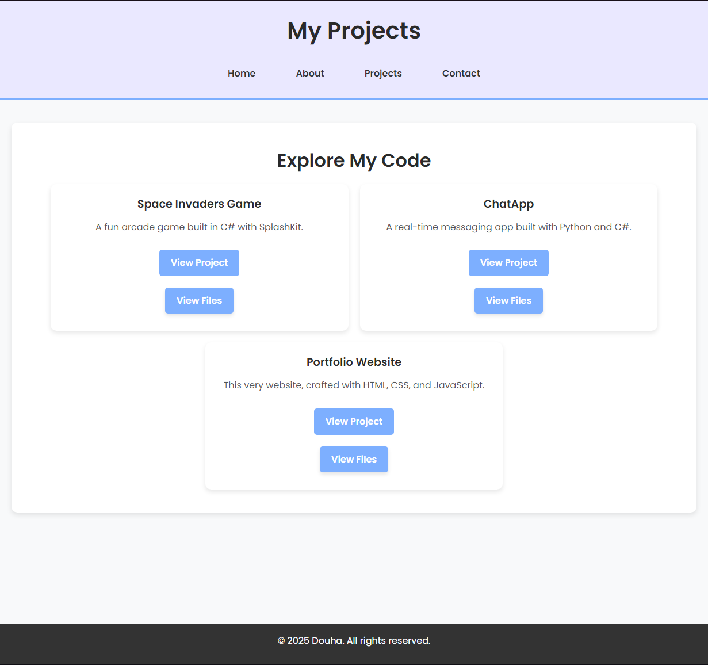
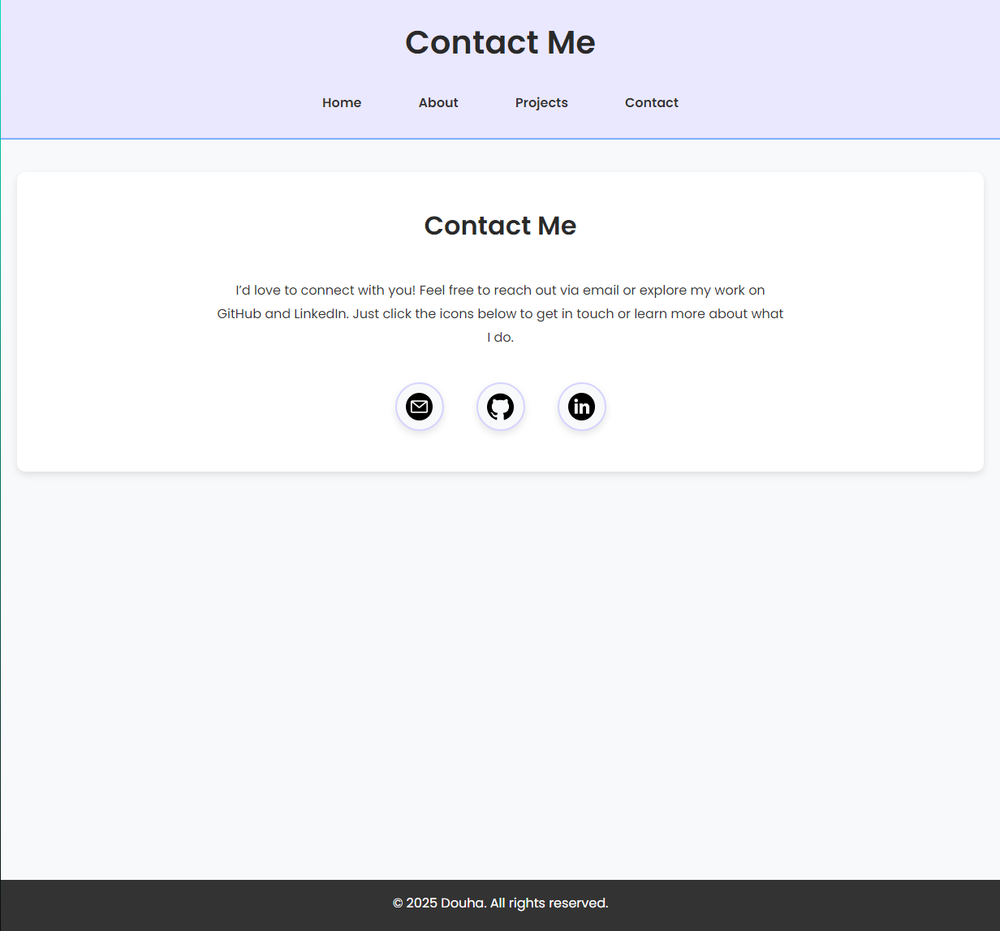

Introduction
Project Overview
This is my personal portfolio website, designed to showcase my coding projects, skills, and creative work in an elegant and accessible way. The website was built from scratch using HTML, CSS, and JavaScript, with a responsive layout to provide an optimal user experience across devices.
Purpose and Goal
The main goal of this website is to create an engaging and organized online presence where potential employers, collaborators, and peers can learn more about me and explore my projects in detail.
Key Features
- Responsive Design: The layout adjusts seamlessly across desktops, tablets, and smartphones.
- Interactive Elements: Includes project galleries with clickable thumbnails, lightbox pop-ups, and toggleable file views.
- Code Syntax Highlighting: Uses Highlight.js to present code snippets in a clean and readable format.
- Modular Structure: The website is organized with reusable CSS classes and responsive components.
- Accessible Navigation: Hamburger menu for smaller screens and keyboard-accessible elements for improved usability.
Development Tools
- Languages: HTML5, CSS3, JavaScript (for interactivity).
- Frameworks and Libraries: Highlight.js (for code formatting), Google Fonts (for typography).
- Version Control: GitHub for source control and project tracking.
Design Elements

The homepage of the website, featuring a hero section, introduction, and quick navigation links.

The "About" page introduces my professional journey, values, and approach to software development. It provides a deeper understanding of who I am and my motivations, with clean, structured sections and a welcoming design.

The "Projects" page displays an overview of all projects with options to explore details or view source files. Each project features code snippets, galleries, and explanations.

The contact section with interactive icons for email, GitHub, and LinkedIn, designed for quick connections. It encourages visitors to reach out and explore my work further.
Challenges and Solutions
- Responsive Design: Ensuring consistency across different screen sizes required thorough testing and flexible layouts.
- Maintaining Simplicity: Balancing detailed content with a minimalistic design was achieved by selectively displaying information and using collapsible sections.
- Performance Optimization: Image compression and lazy loading were implemented to ensure fast loading speeds.
Conclusion
This portfolio website serves as a digital extension of my professional and creative identity. It represents my commitment to continuous improvement, clean design, and effective communication through code.
Future improvements could include adding blog posts for technical write-ups, implementing a built-in form submission feature, and exploring further animation enhancements.